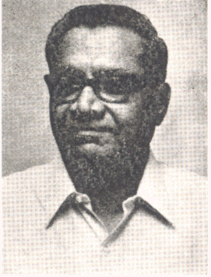

சௌத்ரி தல்பீர் சிங்

முக்கிய பதவிக்காலம்:
நிலக்கரி அமைச்சகம், மாநில அமைச்சர்
௧௯௮௩ - ௧௯௮௪
எரிசக்தி அமைச்சகம், மாநில அமைச்சர்
௧௯௮௨ - ௧௯௮௪
பெட்ரோலிய அமைச்சகம், மாநில அமைச்சர்
௧௯௮௦ - ௧௯௮௨

2வது இந்திரா காந்தி அமைச்சகம்
இரசாயனங்கள் மற்றும் உரங்கள் அமைச்சகம்
துணை மந்திரி
பெட்ரோலிய அமைச்சகம்
துணை மந்திரி
இரசாயனங்கள் மற்றும் உரங்கள் அமைச்சகம்
துணை மந்திரி
கனரக தொழில் அமைச்சகம்
துணை மந்திரி
பணிகள் மற்றும் வீட்டுவசதி அமைச்சகம்
துணை மந்திரி
கப்பல் மற்றும் போக்குவரத்து அமைச்சகம்
துணை மந்திரி
3வது இந்திரா காந்தி அமைச்சகம்
2வது இந்திரா காந்தி அமைச்சகம்
பதவிக்காலம் தகவல்
இரசாயனங்கள் மற்றும் உரங்கள் அமைச்சகம்,
துணை மந்திரி
௩ மே ௧௯௭௧ - ௧ பிப்ரவரி ௧௯௭௨
ஆர்டர்கள்
1_Upload_2802.pdf
1_Upload_2784.pdf

இந்திரா காந்தி
o-Indira_Gandhi.htmlபிரதமர்
௧௮ மார்ச் ௧௯௭௧ - ௨௪ மார்ச் ௧௯௭௭

எச். ஆர். கோகலே
o-H._R._Gokhale.htmlகேபினட் அமைச்சர்
௨௯ ஜனவரி ௧௯௭௨ - ௮ பிப்ரவரி ௧௯௭௩
சௌத்ரி தல்பீர் சிங்
o-Chaudhary_Dalbir_Singh.htmlதுணை மந்திரி
௩ மே ௧௯௭௧ - ௧ பிப்ரவரி ௧௯௭௨
தொடர்புடைய ஆணைகள்
1_Upload_2802.pdf[24]௩ மே ௧௯௭௧போர்ட்ஃபோலியோ மாற்றம்